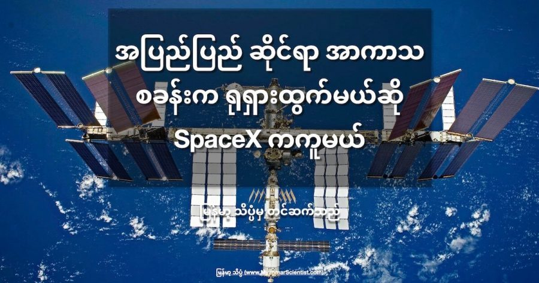

ယခုလက်ရှိ ဖြစ်ပွားနေတဲ့ ယူကရိန်း ကျူးကျော်စစ်ဟာ ကမ္ဘာမြေပြင် ပေါ်မှာ တင်မက အာကာသ ထဲအထိပါ ရိုက်ခတ်လို့ လာပါတယ်။ အထူးသဖြင့် အပြည်ပြည် ဆိုင်ရာ အာကာသ စခန်း (International Space Station, ISS) ပေါ်မှာပေါ့။
အပြည်ပြည် ဆိုင်ရာ အာကာသ စခန်း (ISS) ပေါ်မှာ အမေရိကန်နဲ့ အနောက် အုပ်စု အာကာသ ယာဉ်မှူးတွေ နဲ့အတူ ရုရှား ယာဉ်မှူး တွေလဲ အတူတကွ ပူးတွဲ တာဝန် ထမ်းဆောင် နေကြပါတယ်။ ဒီ နိုင်ငံတွေဟာ ရုရှား အပေါ်မှာ စီးပွားရေး ပိတ်ဆို့မှုတွေ ပြုလုပ်နေတဲ့ နိုင်ငံ ဖြစ်ပါတယ်။
ဒီ ISS ဟာ အမေရိကန်၊ ရုရှားနဲ့ အနောက် အုပ်စု နိုင်ငံတွေ ပူးတွဲ တည်ဆောက် လုပ်ငန်း ဆောင်ရွက်နေတဲ့ အာကာသ စီမံကိန်းကြီး တစ်ခုပါ။ ဒီတော့ ဒီလို ရန်ဆောင်နေတဲ့ နိုင်ငံတွေ ပူးတွဲ လုပ်နေတဲ့ စီမံကိန်းကြီးနဲ့ ပါတ်သက်ပြီး တစ်ချိန်ချိန်တော့ စကားများ လာကြမယ် ဆိုတာ ခန့်မှန်းနိုင် ကြမှာပါ။
ယူကရိန်း နိုင်ငံကို ရုရှားက စတင် ကျူးကျော်စ အချိန်က ရုရှား အာကာသ အေဂျင်စီ ရဲ့ အကြီးအကဲ ဖြစ်သူက အပြည်ပြည် ဆိုင်ရာ အာကာသ စခန်းကို လက်နက် တစ်ခု အနေနဲ့ အသုံးချကောင်း ချရလိမ့်မယ် လို့ ဆိုခဲ့ပါတယ်။
“အကယ်လို့ ရုရှားကို အပြည်ပြည် ဆိုင်ရာ အာကာသ စခန်းကနေ ဖယ်ရှားခဲ့မယ် ဆိုရင် ဒီ အာကာသ စခန်းကြီး အမေရိကန် (သို့) အနောက် ဥရောပ နိုင်ငံတွေ အပေါ် ပြုတ်မကျအောင် ဘယ်သူက ကယ်ပေးမှာ လဲ” လို့ မေးခွန်း ထုတ်လိုက်ပါတယ်။
“ဒါမှ မဟုတ်လဲ ဒီ တန် ၅၀၀ တောင် လေးတဲ့ ယာဉ်ကြီး အိန္ဒိယ (သို့) တရုတ်ပြည်ပေါ် ပြုတ်ကျ သွားရင်ရော ဘယ်လို လုပ်မလဲ။ မင်းတို့ (အမေရိကန်နဲ့ အနောက် အုပ်စု နိုင်ငံတွေ ကို ရည်ညွှန်း) တွေ ဒါမျိုးနည်းလမ်းနဲ့ ဒီ (အိန္ဒိယ နဲ့ တရုတ်) နိုင်ငံတွေကို ခြိမ်းချောက် ချင်တာလား။ ISS က ရုရှားပေါ်က ဖြတ်ပျံတာ မဟုတ်တော့ ငါတို့ ကတော့ ပူစရာ မလိုဘူးပေါ့” လို့ ပြောခဲ့ပါတယ်။
သူပြောတာကလဲ အလကား လျှောက်ပြော နေတာတော့ မဟုတ်ပါဘူး။ ဒီ ISS ကြီး အောက်ပြုတ်မကျအောင် အရှိန် ပြန်တင်ပေးတာ၊ ပတ်လမ်း အမြင့် ပြန်မြှင့်ပေးတာတွေ လုပ်ပေးနေတာက ISS ရဲ့ ရုရှား အပိုင်း မှာ ဆိုက်ကပ်ထားတဲ့ ရုရှား ဒုံးပျံစက် တွေက တွန်းပေးနေတာ မို့ပါ။
အကယ်လို့ ရုရှားကသာ ISS အစီအစဉ် ကနေ ထွက်သွားခဲ့မယ် ဆိုရင် ဒီ အာကာသ စခန်းယာဉ် ကြီးကို အရှိန် ပြန်တင် ပေးတာတွေ၊ လမ်းကြောင်း မြှင့်ပေး တာတွေ မလုပ်နိုင် တော့တဲ့ အတွက် ထိန်းမနိုင် ဖြစ်ပြီး အောက်ပြန် ပြုတ်ကျ လာနိုင်တဲ့ အန္တရာယ် ရှိနေပါတယ်။
နောက်ပြီး အာကာသ ယာဉ်ကြီးက ကြီးလွန်းတာမို့ လေထုထဲ ပြန်ဝင်တဲ့ အခါမှာ အကုန်အစင် လောင်ကျွမ်းမှာ မဟုတ်ပဲ အစိတ်အပိုင်းတွေ မပျက်မစီး မြေပြင်ပေါ် ကျရောက် ထိမှန် ပျက်စီး စေနိုင်ပါတယ်။ အထူးသဖြင့် လူနေ ထူထပ်တဲ့ မြို့ကြီးတွေပေါ် ကျရောက် ပေါက်ကွဲ ခဲ့မယ်ဆိုရင် ပျက်စီး ဆုံးရှုံးမှု အများအပြား ကြုံတွေ့ ရနိုင်ပါတယ်။
ရုရှား အာကာသ အေဂျင်စီ အကြီးအကဲ ရိုဂိုဇင် (Rogozin) က ဒီလို ခြိမ်းခြောက်မှုကို သူ့ရဲ့ တရားဝင် တွစ်တာ စာမျက်နှာပေါ်မှာ ရေးသားခဲ့တာ ဖြစ်ပါတယ်။ ဒါပေမယ့် ဒီ တွစ်တာကို အီလွန် မတ်စ်ခ် က တွေ့တဲ့ အခါမှာတော့ အောက်ကနေ ရိုးရိုးလေးပဲ ပြန်မန့်ခဲ့ ပါတယ်။
သူက ရိုးရိုး လေးပဲ SpaceX ရဲ့ လိုဂို ပုံလေးနဲ့ ပြန်ခြေပခဲ့တာပါ။
သူ့အနေနဲ့ ပြန်ပြောမယ် ဆိုလဲ ပြောနိုင်တဲ့ အနေအထားက ရှိနေပါပြီ။ လက်ရှိမှာ အမေရိကန် ပြည်ထောင်စုက ISS ပေါ်ကို စေလွှတ်တဲ့ အာကာသ ယာဉ်မှူးတွေနဲ့ ကုန်ပစ္စည်း တွေကို SpaceX ကပဲ တာဝန်ယူ ပို့ဆောင် ပေးနေ ခဲ့တာပါ။ ဒီတော့ အကယ်လို့ လိုအပ်ခဲ့မယ် ဆိုရင် SpaceX ရဲ့ ဒုံးစက်တွေကို အပြည်ပြည် ဆိုင်ရာ အာကာသ စခန်းမှာ တပ်ဆင်လို့ ရအောင် ပြုလုပ်ဖို့ ခက်ခဲမှာ မဟုတ်ဘူးလို့ အာကာသ အင်ဂျင်နီယာ တွေက ထောက်ပြကြပါတယ်။
အများစု ကတော့ ရုရှားဟာ ဒီ ISS စီမံကိန်းကနေ လက်ရှိတော့ ထွက်သွားအုံးမှာ မဟုတ်ဘူးလို့ ယူဆကြ ပါတယ်။ ဒါပေမယ့် အကယ်လို့ ထွက်သွားခဲ့မယ် ဆိုရင်တောင် SpaceX ဒုံးကျည်တွေနဲ့ ISS ကို အသက်ဆက်ဖို့ ရနိုင်တဲ့ အတွက် ပူစရာတော့ သိပ်မရှိ လှဘူးလို့ ဆိုနိုင်ပါတယ်။
Reference: If Russia Backs out of the ISS, SpaceX Could Help Keep the Station Operational | Universe Today
အပြည်ပြည် ဆိုင်ရာ အာကာသ စခန်းက ရုရှားထွက်မယ်ဆို SpaceX ကကူမယ်

March 7, 2022
Other Posts
- ဆိုက်ကလုန် မုန်တိုင်းတွေ ဘယ်လို ဖြစ်လာသလဲ
- ရှေးအကျဆုံး အီဂျစ်မံမီ ရှာတွေ့
- စကြာဝဠာရဲ့ နောက်ခံ ဆွဲအားလှိုင်းများ ရှာဖွေတွေ့ရှိ
- အပြည်ပြည် ဆိုင်ရာ အာကာသစခန်း သက်တမ်းတိုးရန် သဘောတူညီမှုရရှိသွားပြီ
- အင်္ဂါဂြိုဟ် ပေါ်က တံခါးပေါက်ကြီး
- လ မြေသားမှ အောက်ဆီဂျင် အောင်မြင်စွာ ထုတ်ယူနိုင်ပြီ
- ဟိုက်ဒရိုဂျင် ဓါတ်ငွေ့ရည်သုံး eVTOL ထောင်လိုက်တက်ဆင်း မိုးပျံယာဉ် Paragon Soar
- Drone တွေကို ပစ်ချမယ့် Drone Gun Tactical
- Black Hole တွေကနေ တောက်ပတဲ့ အလင်းရောင် ဘယ်လို ထွက်လာလဲ
- Black Hole တွေနားမှာ အဆင့်မြင့် သက်ရှိအဖွဲ့အစည်းတွေ ရှာတွေ့နိုင်မယ်